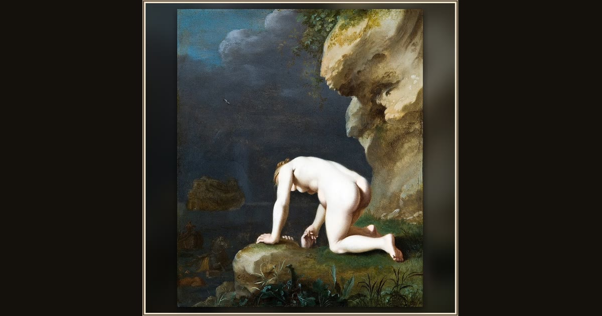

The Goddess Calypso Rescues Ulysses
Cornelis van Poelenburgh · 1630 · Hallwylska museet (Hallwyl Museum) · Stockholm, Sweden
In this little painting on shining copper, the nymph Calypso pulls the shipwrecked Odysseus from the waves onto her enchanted island. Explore its place in Book IV of the Odyssey.